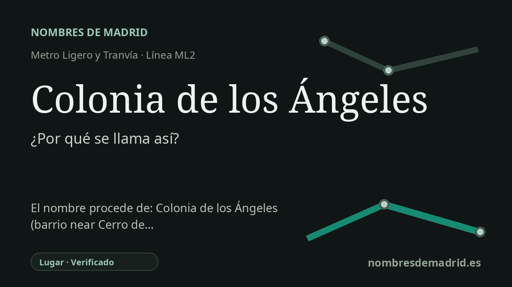

Publicado el · Investigación de Nombres de Madrid · Cómo verificamos cada origen · 7 fuentes consultadas
Respuesta rápida
La parada de ML2 lleva el nombre de la Colonia de los Ángeles, la colonia residencial de Pozuelo de Alarcón en la que se encuentra. La colonia fue fundada y parcelada en 1926, dentro de la oleada de «colonias de hotelitos» de principios del siglo XX en torno a Pozuelo.
La historia del nombre
El nombre de la estación es local y directo: Colonia de los Ángeles da servicio a la Colonia de los Ángeles de Pozuelo de Alarcón. El CRTM sitúa la parada en la carretera de Carabanchel, la M-502, dentro de Pozuelo; por tanto, el nombre remite a la colonia inmediata y no a una persona, a un monumento ni al Cerro de los Ángeles de Getafe.
La colonia pertenece a un capítulo muy característico de la historia urbana de Pozuelo. Tras la llegada del ferrocarril entre Madrid y el noroeste en 1861, el municipio se hizo atractivo para familias madrileñas que buscaban aire más sano, casas de verano y viviendas unifamiliares. Las historias locales llaman a esas casas hoteles, en el sentido antiguo de chalés, y a sus agrupaciones colonias de hotelitos.
La historia municipal de Pozuelo ofrece la cronología clave para este topónimo. La Colonia de los Ángeles fue fundada y parcelada por su propietario en 1926, y tres años después se creó la Sociedad Colonia de los Ángeles. Siguió a colonias anteriores como San José, fundada en 1914, y se desarrolló en el mismo paisaje amplio de Húmera, Somosaguas, el borde de la Casa de Campo y los antiguos caminos que comunicaban Pozuelo con Madrid.
La palabra Ángeles conserva además una dimensión religiosa y vecinal. El Ayuntamiento recoge que las fiestas locales en honor de Nuestra Señora de los Ángeles empezaron en 1942, organizadas por unas 35 familias de colonos, con misa, procesión, bailes, juegos y celebraciones de barrio. Esa tradición mantiene unido el topónimo a la parroquia y a la imagen de la Virgen, aunque el nombre de la colonia es anterior a las fiestas documentadas de 1942.
La prueba es sólida para el origen inmediato de la estación: se llama así por la cercana Colonia de los Ángeles, y Metro Ligero Oeste abrió su red de metro ligero en julio de 2007. Lo que queda menos claro es la razón inicial por la que el promotor de 1926 eligió el nombre Los Ángeles. La ficha también debería eliminar la frase que vincula la colonia de Pozuelo con el Cerro de los Ángeles, porque las fuentes oficiales de Getafe sitúan ese cerro y su santuario en Getafe, al otro lado de Madrid.